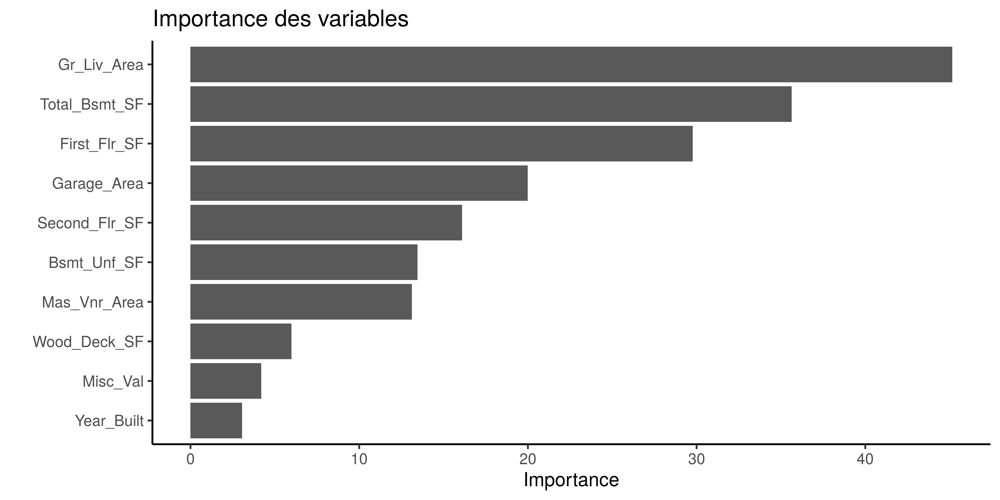

8 Conclusion
En conclusion il en ressort que le modèle de régression linéaire multiple possède le meilleur score dans ce test de performance.
Or notre objectif premier dans cette étude était de trouver les déterminants qui entrent dans l’explication du prix des propriétés résidentielles, pas simplement de construire un modèle qui fait de bonnes prédictions. Ainsi nous sommes davantage intéressés par l’explicabilité du modèle que par sa capacité prédictive.
Le faible taux d’erreur que nous avons observé pour la régression multiple est dû au fait que nous avions inclus toutes les 34 variables dans la construction du modèle. Or comme nous l’avons vu, plusieurs des variables n’étaient pas du tout significatives et le grand nombre des variables est un risque de sur-interprétation et il est donc difficile de généraliser ces résultats.
L’intérêt pour les deux modèles que nous avons construits (PCR et PLS) est que les résultats sont facilement généralisables. En effet pour la construction de ces modèles nous avons consenti à perdre des données pour gagner en généralité, nous sommes passés d’un complexe de 34 variables explicatives à un modèle simple à 5 composantes qui sont les combinaisons linéaires des 34 variables.
Pour le modèle de régression sur les composantes principales, nous savons que l’analyse en composantes principales applique une forme de contrainte sur les variables en ce sens que les variables peu significatives ont un poids insignifiant.
La régression sur les moindres carrés partiels a donné une plus mauvaise performance que la régression sur les composantes principales même alors que que la PLS est censée répercuter dans la construction des composantes synthétiques la variabilité de la variable endogène. Nous pouvons penser qu’en raison des valeurs aberrantes de certaines propriétés résidentielles rares la construction des variables synthétiques a subi des biais qui ont conduit à cette situation. Il est possible de corriger certains de ces problèmes lorsqu’on connaît le fonctionnement des méthodes et lorsqu’on a fait une bonne analyse exploratoire des données.
Concernant le sujet de ce travail, nous observons à l’aide du graphique suivant que les variables déterminantes dans le prix des propriétés résidentielles sont somme toutes des variables faisant référence est la superficie de la propriété résidentielle.
